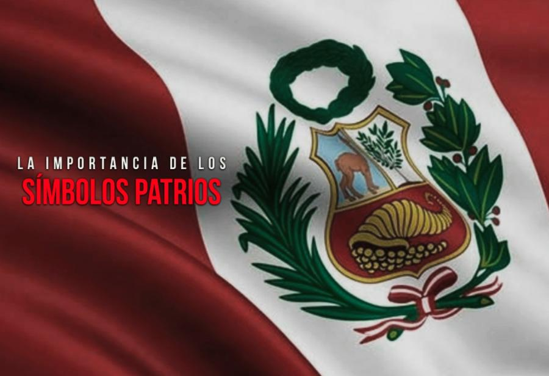

La historia de Perú se remonta a hace más de 11.000 años, con la presencia cazadores-recolectores nómadas que aparecieron en el territorio actual del país mucho antes incluso que ahí se estableciese la civilización de Norte Chico, una de las seis más antiguas del mundo. El Imperio de los Inca, que unió el Perú entre los años 1438 y 1532 fue la mayor dinastía de la América precolombina y aún hoy se puede comprobar su influencia. La historia de Perú no difiere mucho de la de otras naciones hispanoamericanas. Fue conquistado por los españoles en 1524 después de que una devastadora epidemia de viruela barriese la población del imperio incaico y arruinase su estabilidad política. La cultura peruana tiene unas raíces muy firmes en su pasado colonial, como la lengua mayoritaria. Durante ese periodo de la historia peruana, la explotación de recursos naturales dio lugar a una expansión económica que llevó a Lima a convertirse en una distinguida capital colonial. El Virreinato del Perú fue el último reducto de poder español en América del Sur. La República del Perú fue declarada oficialmente en 1821. A continuación se sucedieron una serie de conflictos y disputas territoriales en lo que fue uno de las etapas más sangrientas de la historia de Perú. El siglo XX fue época de inestabilidad en la historia peruana: los gobiernos militares abundaron durante todo el siglo, tolerados a menudo desde el exterior debido a que Perú fue el primer país de Hispanoamérica que declaró su alianza con Estados Unidos durante la Segunda Guerra Mundial. El periodo de postguerra fue protagonizado por varios alzamientos militares y no fue hasta 1985 que hubo una sucesión de poder democrática por primera vez en cuarenta años de historia peruana.
Los sagrados colores de la bandera peruana fueron inspiración del general José de San Martín. En cuanto el porqué del rojo y blanco existen muchas interpretaciones. Algunos historiadores afirman, por ejemplo, que San Martín quiso tomar los colores de Argentina (blanco) y de Chile (rojo), países originarios del Ejército Libertador. Otros aseguran, en cambio, que fueron producto de una inspiración del general, al observar los colores de las “parihuanas”, aves que abundan en la Bahía de Paracas y que volaban sobre la escuadra libertadora al momento de su desembarco. También se dice que la bandera del Perú es roja porque fue el color de la guerra de los Incas y porque simboliza la sangre generosa de nuestros héroes y mártires; mientras que el blanco de su faja central representa la pureza de sentimientos, la libertad, la justicia social y la paz. El 21 de octubre de 1820, el general José de San Martín creó mediante decreto la primera bandera peruana. El cruce de dos líneas diagonales dividía en cuatro campos la bandera. Los espacios superior e inferior eran de color blanco, mientras que los extremos eran de color rojo. Al centro figuraba una corona ovalada de laurel y dentro de ella un sol surgiendo por detrás de elevadas montañas sobre un mar tranquilo.
| CAPITAL | COMIDA TIPICA | DANZA | LUGAR TURISTICO | RIOS |
| Cajamarca | Picante cuy frito | La Marinera | Plaza de Armas Cajamarca | Chamaya |
| Trujillo | Sopa Teóloga | Zamacueca | Huaca del Sol y la Luna | Río Tocuyo |
| Lambayeque | Ceviche de pato | El tondero | Paseo de las Musas | Río Chancay |
| Piura | Seco de cabrito | La marinera norteña | Desierto de Sechura | Río Huancabamba |